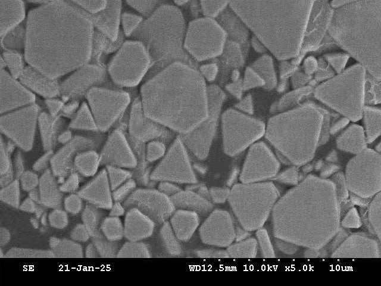
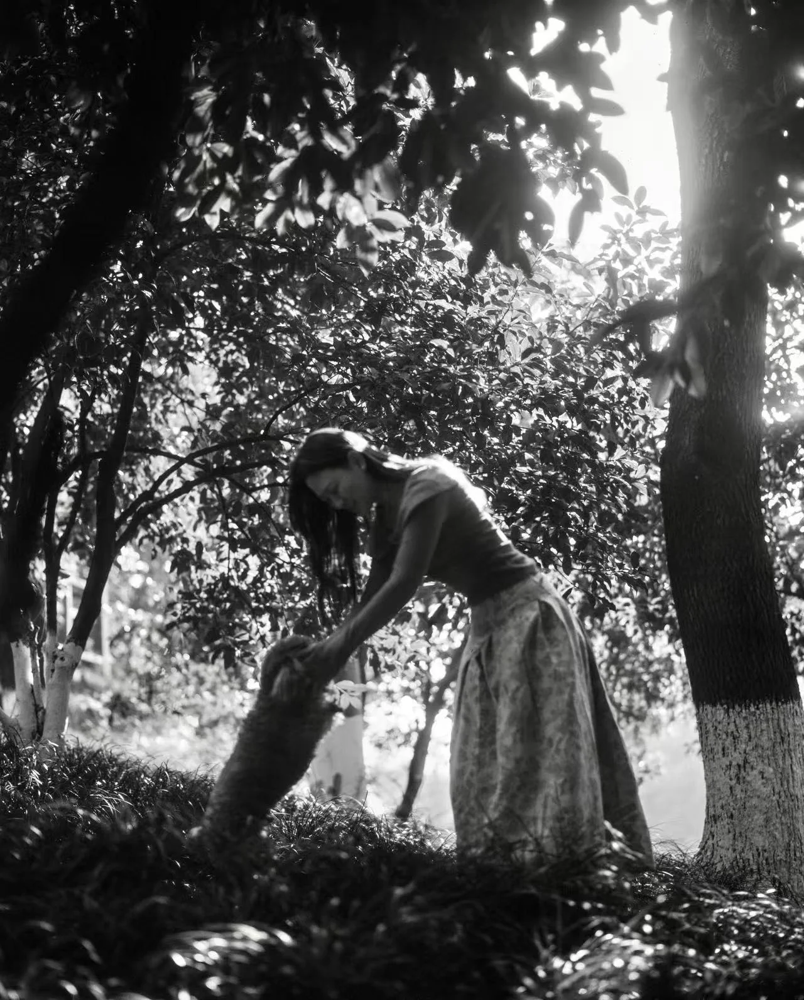
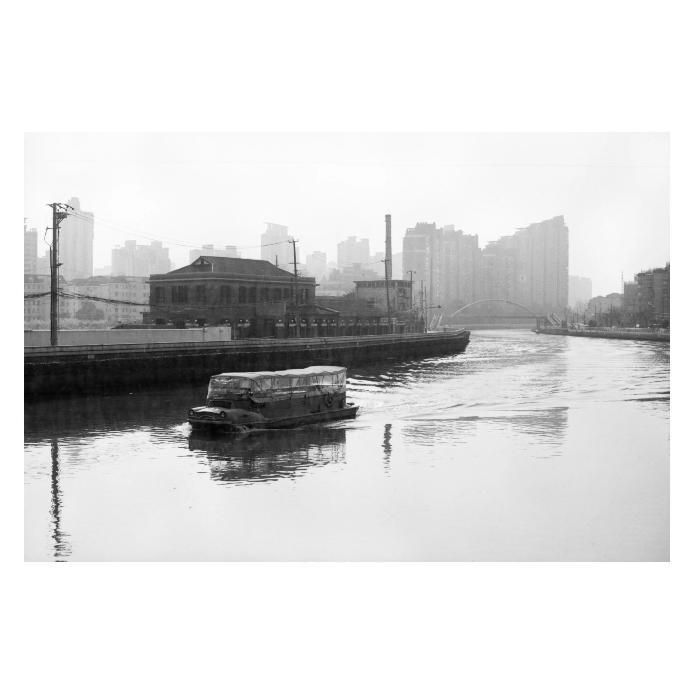
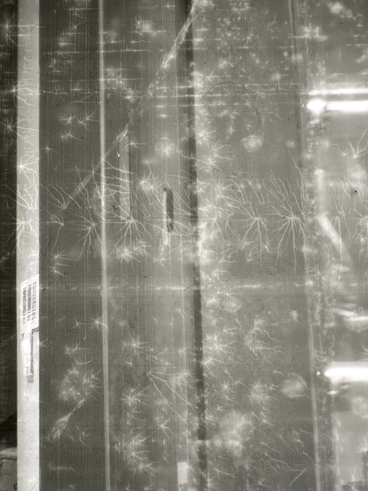
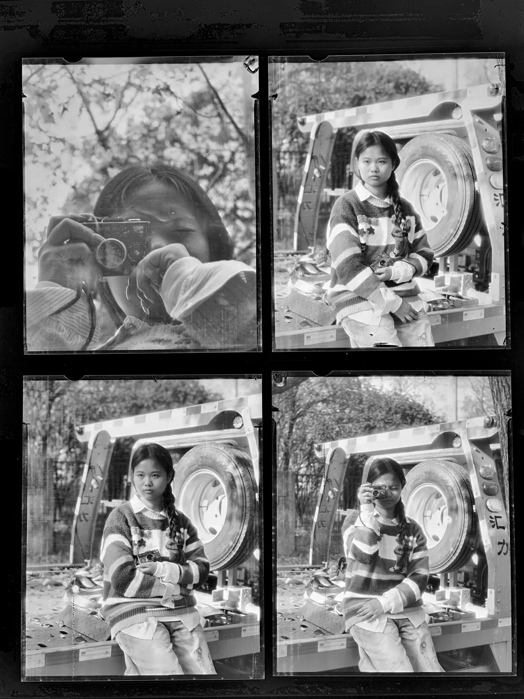
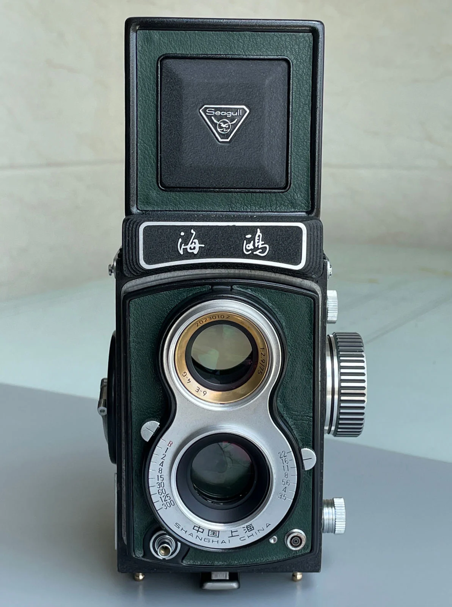
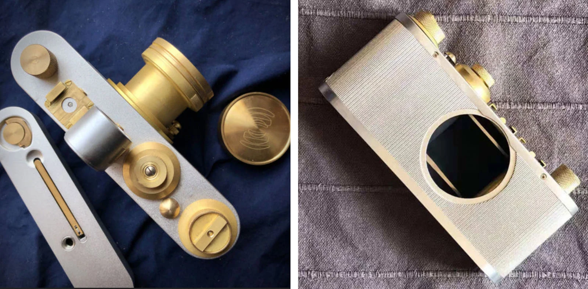

필름이 사라지지 않은 시대에, 필름을 새로 만들기 시작하는 회사가 또 늘었다. 이번엔 출신이 다르다. 라이카 빈티지 렌즈를 1:1 복각해온 중국 광학 회사 라이트렌즈랩(Light Lens Lab, 줄여서 LLL)이다.
광학 회사가 왜 필름을
2018년 장시성 상라오(上饶)에서 Mr. Zhou(周)가 설립한 LLL 은 이른바 "Replication Project" 로 알려진 회사다. 라이카 M 마운트와 스크류 마운트의 희귀한 빈티지 렌즈를 1:1 로 복각한다. 대표작인 35mm f/2 Eight Element 는 1958년의 Summicron 35mm f/2 v1 을 그대로 다시 만든 것으로, 라이카 글로우라 부르는 그 광학 톤까지 재현했다는 평을 받아왔다.
이런 결과를 위해 LLL 은 현대 양산에서 거의 쓰지 않는 배합을 다시 꺼낸다. 빈티지 라이카·시네마 렌즈의 굴절률을 살리기 위해 납과 란타나이드를 섞은 유리를 쓴다. 그러니까 LLL 은 "배합을 복원하는" 회사다. 광학 배합을 복원하던 흐름의 연장으로 이번엔 필름 에멀젼 배합에 손을 댄 셈이다.
2025년 1월의 선언
2025년 1월 29일, LLL 은 공식 블로그를 통해 필름 프로젝트 공식화를 알렸다. 범위는 작지 않다. T-그레인 구조의 흑백, 컬러 리버설 E-6, 영화용 ECN-2, 그리고 코닥 Kodachrome 의 그 K-14 공정 부활까지 들어 있다. 즉석 필름의 peel-apart 포맷도 검토 중이라고 했다.
핵심은 자급자족이다. 배합만 자체 개발한 게 아니라 코팅 자동화 장비를 처음부터 직접 만들었다. LLL 은 "자기들이 자체 배합, 자체 장비로 끝까지 컨트롤할 수 있다" 는 것을 가장 강조한다. 렌즈 사업은 LLL 브랜드 그대로 가져가고, 필름은 별도의 새 브랜드명으로 내놓을 계획이라고 밝혔다. 발표 시점에 이름은 정해지지 않았고, 1년 반이 지난 지금도 공개되지 않았다.
흑백 에멀젼 V3, 숫자로 들여다보면
1년 반 동안 가장 진척이 잡힌 건 흑백이다. 2025년 5월에서 6월 사이 LLL 이 공개한 V3 tabular grain emulsion 의 수치를 정리하면 이렇다.

- 2~3 마이크론 tabular 결정 + 소량의 1마이크론 cubic-octahedral 결정
- 속도 ASA 125. 안티헤일레이션 층 통합
- 분광 감도 범위 약 380~700nm. LLL 은 "민간 흑백 필름 중 가장 넓은 컬러 감도 범위" 라고 주장한다
- 청·녹 감응 dye 는 지금은 사라진 영국의 한 에멀젼 제조사 출처. 적색 감응 dye 도 비슷한 경로
전통형 입자 구조의 ISO 400 흑백도 따로 개발 중이라고 한다. 이쪽은 시판 흑백 클래식의 결을 노린다.


2026년, 양산에서 막힌 것들
야심은 컸지만 출시 일정까지 같이 가벼웠던 건 아니다. LLL 은 2025년 6월에 프로토타입 어셈블리 라인을 가동했다. 그런데 2025년 말부터 2026년 초까지의 생산 테스트에서 두 가지 실제 문제가 보고됐다. 8×10 필름 코팅 과정의 정전기 문제, 그리고 4×5 tabular grain 테스트에서의 스크래치와 에멀젼 손상이다. 필름이라는 매체가 배합만큼이나 양산 환경에 민감하다는 것을 다시 확인한 셈이다.


2026년 5월에서 6월 사이, LLL 은 필름 생산을 상라오의 렌즈 공장으로 통째로 옮겼다. 렌즈와 필름의 테스트·조립·QC 를 한 지붕 아래로 모은 것이다. 같은 시기에 공개된 LLL 의 메시지는 이렇게 압축된다.
필름이 자기만의 인식 가능한 character 를 가질 것. 빛 조건이 달라져도 콘트라스트가 일관될 것. 현상 조건이 달라져도 일관되게 반응할 것. 푸시 처리에 유연할 것. 생산 결함이 없을 것.
특히 다섯 번째 조건 때문에 LLL 은 공식 출시를 미루는 중이다. "공정이 일관되고 재현 가능하며 완전 자동화될 때까지" 라는 단서를 직접 달았다. 2026년 안에 첫 상용 흑백 필름을 내놓는 것이 현재 목표이고, 그 전에 선별된 리테일러·리뷰어·테스터들에게 시험판이 먼저 풀릴 것으로 보인다.
K-14 부활 선언, 그리고 회의주의
한 가지 짚을 게 있다. LLL 의 발표에 들어 있던 Kodachrome K-14 공정 부활은 무게가 다른 항목이다. 코닥 본사도 여러 차례 "현실적으로 불가능" 하다고 못박은 일이고, 화학 원료와 현상 인프라가 사라진 게 그 이유였다. LLL 이 자체 라인으로 어디까지 갈 수 있을지는 회의적으로 보는 게 안전하다. 페이퍼 즉석 필름(peel-apart)도 야심은 야심이고, 실물 출시 시점은 아직 가늠하기 어렵다.
렌즈만 만드는 회사도 아니다, 카메라 두 줄기
LLL 의 사업은 렌즈와 필름만이 아니다. 카메라도 두 갈래로 굴리고 있다.
하나는 Seagull TLR Upgrade Project. 중국 Seagull 4 TLR 의 업그레이드 프로그램이다. 원본의 75mm f/3.5 렌즈를 75mm f/3.5 Planar 배합으로 다시 복각하고 (LLL 답게 화학 배합과 코팅까지 동일하게), 안쪽 기계 부품을 오버홀하고, 광학 부품을 재제작한다. 거기에 Hasselblad/Minolta Acute Matte 스크린을 재제작해 포커싱 스크린을 업그레이드하고, 필름을 광축에 더 평평하게 누르는 새 필름 압판도 더한다. 한 마디로 옛 중급 TLR 한 대를 "LLL 배합으로 다시 짠다" 는 프로젝트다. 현재 LLL 의 메인 카메라 라인이다.

다른 하나는 Standard Camera Project. 라이카 III 를 기반으로 한 Barnack 스타일 스크류 마운트 레인지파인더. 2022년 첫 사진이 유출됐고 2023년 1월 마지막 업데이트 이후 LLL 이 "현재의 생산·조립 규모로는 재정적으로 비현실적" 이라며 보류시켰다. 폐기는 아니고, Seagull 업그레이드와 필름이 자리 잡은 다음에 다시 돌아오겠다는 단서를 달았다.

중국 필름 생태계의 또 한 결
이 흐름이 흥미로운 건 LLL 의 출발점이 다르기 때문이다. 보통 필름 회사는 광학 회사가 아니다. 빈티지 광학을 배합까지 복원하던 회사가 필름의 배합·결정·dye 에까지 손을 댄 것이다.
한쪽에서 Lucky 가 자체 배합으로 컬러를 다시 만들고, Shanghai GP3 가 끊기지 않고 흐르고, Reflx Lab 이 시네필름을 가정용으로 잘라 옮기는 중국 필름 시장에, LLL 은 자기 장비부터 만들어 배합·코팅·QC 까지 사내에서 끝내겠다는 방향으로 뛰어든다. 같은 시장의 같은 빈자리를 다른 길로 접근하는 회사가 또 늘었다는 뜻이다.
2026년 안에 첫 흑백 한 통을 손에 쥘 수 있을지, 8×10 의 정전기를 어떻게 잡았는지, K-14 가 정말 돌아올 수 있는지. 한동안 지켜볼 일이다.
정리
- 라이트렌즈랩(Light Lens Lab, LLL) 은 라이카 빈티지 렌즈를 1:1 복각해온 중국 광학 회사. 2018년 상라오에서 설립.
- 2025년 1월 29일 필름 제조 계획 공식 발표. T-그레인 흑백부터 K-14 부활까지 야심차게 범위를 잡음.
- 배합·자동화 장비·QC 라인을 모두 자체 개발. 자급자족이 핵심 메시지.
- 2025년 5~6월 V3 흑백 에멀젼 안정화 (ASA 125, 안티헤일레이션, 380~700nm 분광 감도). 6월 프로토타입 라인 가동.
- 2025년 말~2026년 초 8×10 코팅 정전기, 4×5 스크래치 등 실물 생산 문제 보고. 공식 출시 연기.
- 2026년 5~6월 필름 생산을 렌즈 공장으로 통합. 첫 흑백 필름 출시는 2026년 안을 목표로 진행 중이지만 일정은 유동적.
- 카메라 사업은 Seagull TLR Upgrade Project 중심. Barnack 스타일 Standard Camera 는 보류 상태.
- 필름 브랜드명은 1년 반째 미공개. 국내 수입 계획도 확인된 바 없음.
참고 출처: Light Lens Lab 공식 블로그 — Upcoming Projects, Film Project Announcement, Seagull TLR Upgrade Project, About Us. 본문에 인용한 기술 수치·일정·사례는 위 1차 출처와 PetaPixel·Kosmo Foto·Photo Rumors 의 보도를 교차 확인했다. 본 기사에 사용된 이미지나 도식은 모두 Light Lens Lab 의 자료이며, 사용 시 © Light Lens Lab 표기 권장. 국내 수입·유통 계획은 별도 확인 필요.